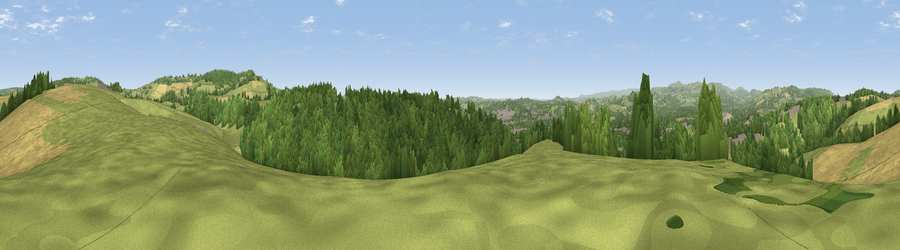

Viewpoint near Ideford Combe
#20522 in England · top 43% of its area beats it · near Ideford CombeThe view, rendered

A 360° render of this exact spot computed from the terrain model, tree cover and land cover — summer colours, afternoon light, calibrated against photographs of famous viewpoints. Real trees, hedges and buildings will differ in detail.
The panorama
Grey silhouette: terrain skyline in each direction (720 bearings, Earth curvature and refraction included). Dashed green: skyline with trees (+15 m) and buildings (+8 m) as obstacles. Blue strip: how far the ground is visible on each bearing.
Where the view opens
Wedge length = distance to the farthest visible ground on that bearing (vegetation-aware). Rings at 10, 25 and 50 km.
What fills the view
41% woodland · 39% grassland · 15% cropland · 4% built-up
Angular shares of the visible panorama (visual magnitude), not map area. Landscape diversity 0.51 (0–1 Shannon).
Key numbers
More beautiful places nearby
The staircase of upgrades: each row has a higher view potential than everything closer. Driving times are estimates from straight-line distance, calibrated against real road routing — check an actual route before setting out.
| Place | Direction | Drive | Score |
|---|---|---|---|
| Viewpoint near Ideford Combe | N · 1 km | ~3 min | 53.7 |
| Viewpoint near Kingsteignton | S · 1 km | ~4 min | 55.1 |
| Viewpoint near Kingsteignton | SSE · 2 km | ~5 min | 64.0 |
| Viewpoint near Bishopsteignton | SE · 2 km | ~5 min | 69.5 |
| Viewpoint near Bishopsteignton | E · 3 km | ~7 min | 79.9 |
| Viewpoint near Holcombe | E · 6 km | ~12 min | 83.3 |
| Viewpoint near Shaldon | SE · 7 km | ~14 min | 83.8 |
| Viewpoint near Stokeinteignhead | SE · 7 km | ~15 min | 84.1 |
50.56508, -3.58451 · source: screening · position refined by local search. Computed location — check access rights before visiting.